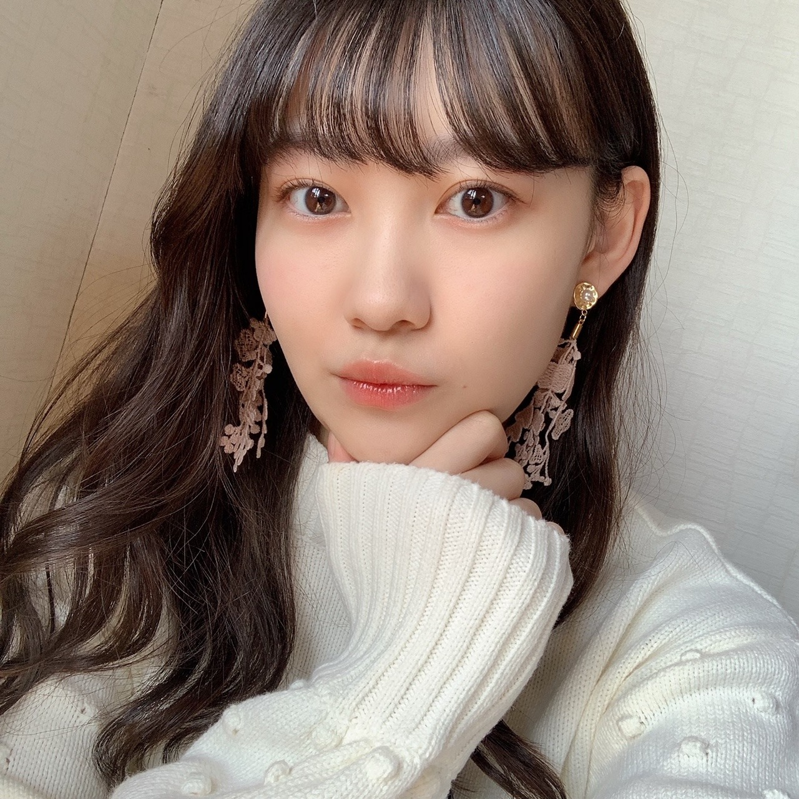
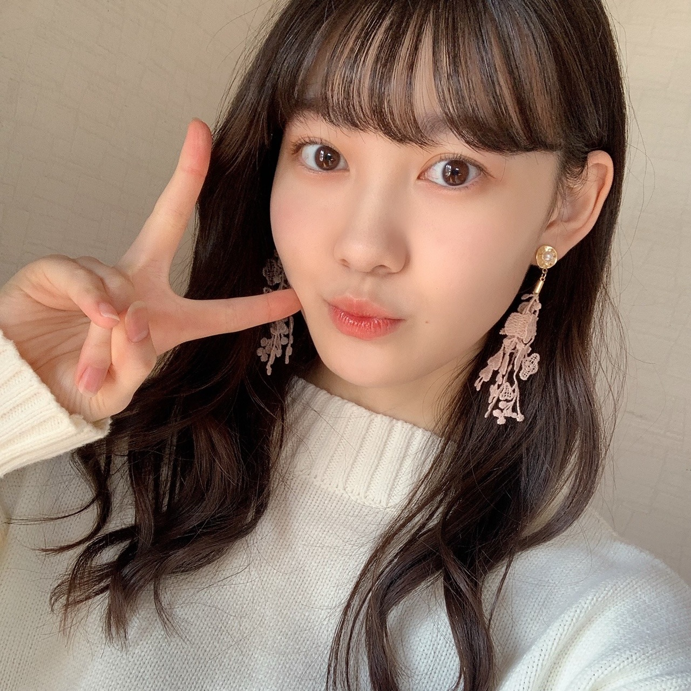
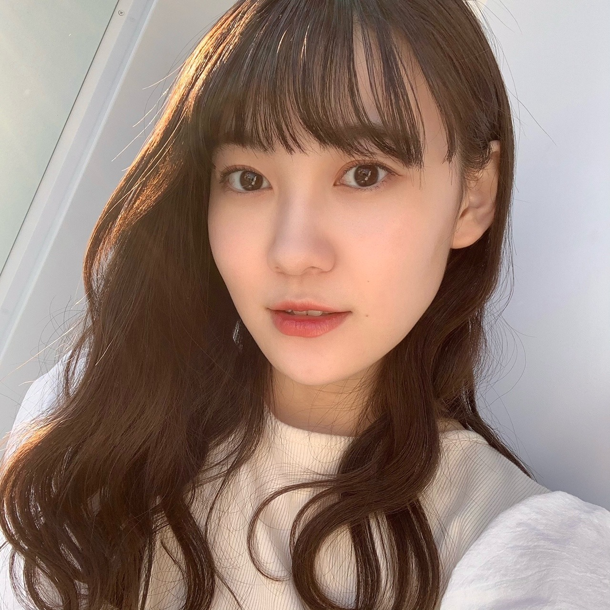

2020/1116Monまつです。 松尾美佑
最近みかんが美味しいです。
2個だって3個だって食べれちゃいます。
まだまだかな。？
千葉県出身
高校2年生
16歳
最近前髪が言う事を聞いてくれなくて悩んでいます(˘･~･˘)
松尾美佑です¨̮
前髪が言う事を聞いてくれないのも本当に大変なんですけど、
それよりも大変なのは2WAYのヘアアイロンが壊れちゃったことです...！！！
(˘･~･˘)(˘･~･˘)(˘･~･˘)
困った困った。
大変です皆さん、。
私、やっちまいました。
今携帯落としたら画面割れちゃいました...
あぁぁぁぁぁぁあああ。
しかも内カメの所にもヒビ入っちゃって、
写真撮る時モヤモヤが写っちゃうようになっちゃいました...( ᵕ ᵕ̩̩ )
次のブログの写真はモヤモヤかもしれないです...( ;ᯅ; )

まだ携帯が割れてない頃に撮った写真(∵)
この時の彼女は次の日携帯が割れるなんて思ってもいないですよ。という表情をしています。
✽ イルミネーション見に行きたいー？
行きたいです( ᐛ)
ちょっと前までは小さな電気の集まりを見て何が楽しいんだろうと不思議だったんですけど、めっちゃ綺麗ですね
気づけて良かった！
✽ 朝寒い時に起きるコツってある？？
私も知りたいですほんと(´◔‸◔`)
寒くなくても起きられない。重症です。
アラーム10分おきに掛けてるのに。
✽ ミュウちゃんは冷え性ですか？
冷え性だったらなにか対策はしてますか？
指先が冷たい系の人間です。
心は暖かいよ？と思いながら生きています。
動く！お風呂！毛布増やす！
✽ 第二言語学ぶなら何語が良い？
最近凄い英語話せるようにしたいなって思います。
今日の夢では海外の方に
「このボールペンは4色ボールペンだからあなたの好きな色を4色選ぶことが出来ますよ。」って単語をつなげた英語で説明してました。
そしたら彼は
「でもそれだと黒が無いから使えないよ」と言うので、
「いえいえ、それはあなたが黒も選べばいい話じゃないですか。」と返しました。
✽ 最近よく聴く曲ありますか？
聴くっていうか、歌うのはAimerさんの『カタオモイ』が多いです。
オーディションの時に歌ったんですけど、久しぶりに無意識にぽそぽそ歌っていたら歌詞があやふやになっちゃってて、(柚菜ちゃんが一緒に歌ってくれて思い出しました☺︎)
思い出したい！って思ってしばらく歌っていたらまたハマりました。
本当に可愛い歌詞と綺麗な音の曲です。
はいっ！

ぴーす
るなちゃん〜
今はねー、んー、
チーズ食べたい~₍ᐢ.ˬ.ᐢ₎
明日は〜
なお〜〜〜〜〜〜〜〜
豚汁は美味しいねぇˊᵕˋ
太陽が眩しい...！！！
昨日の乃木坂工事中で26枚目シングルの選抜発表がありました。
初めて選抜発表という場のいつもとは違う空気を体感しました。
真佑ちゃん、レイちゃん初選抜おめでとう！
さくらちゃん、かきちゃん、あやめちゃん、
5人を応援してます！
少しでも頼れる人間になれるように頑張ります。
これからの乃木坂46の力になれるように、少しでも必要だと思って貰えるような人間になれるように、
私も精一杯自分と戦いながら頑張ります。
これからもよろしくお願いします！

太陽に勝った！！
今日のタイトルはレイちゃんが決めてくれました〜
また5日後！
ミュウでした¨̮
ばいっっっっっっっ( Ꙭ )/''

PROFILE
新4期生リレー
202104
| SUN | MON | TUE | WED | THU | FRI | SAT |
|---|---|---|---|---|---|---|
| 1 | 2 | 3 | ||||
| 4 | 5 | 6 | 7 | 8 | 9 | 10 |
| 11 | 12 | 13 | 14 | 15 | 16 | 17 |
| 18 | 19 | 20 | 21 | 22 | 23 | 24 |
| 25 | 26 | 27 | 28 | 29 | 30 | |

コメント(202)
スマホの画面割れるの辛いよねー自分ももう割れて1年くらい経ってるからすごい使いにくいよ〜
もう自分からしたらみゅうちゃんから沢山の元気貰ってる！いつもありがとう！
ブログ更新ありがとう！
ー質問ー
・呼ばれたいあだ名ってあるかな？
・写真集を発売するならどこで撮影したい？
・気晴らしではよく何をする？
ありがとう！次回も楽しみにしているよ。
ずっと応援してる！
Aimerさんの曲俺も聴きます！
好きな〇〇まんは？例肉まんなど！
北海道生まれなので冬はコタツに入りながら無限にみかん食べれます。笑
自分も末端冷え性なので仲間ですね
季節関係なく朝起きたら指先が凍りついてます。笑
26thも何かしらの形で美佑ちゃんも参加するだろうから楽しみにしてるね！
自分英語科なので一緒に英語勉強しよ〜！笑
また来週楽しみにしてます！
好きなおにぎりの具は何ですか？
ブログ更新お疲れ様！！！！！！
レイちゃんがタイトル決めたんか！みかんもレイちゃん繋がりかな？？？
普段使ってるものが立て続けに壊れる…災難だなぁ…。でも、悪いことあったらいい事で帰ってくるかもしれないから期待していいのでは？(笑)
選抜はまぁこれから！これから！！まだまだ先は長いから無理せず焦らず頑張ってね！応援してます
偉そうに言ってごめん
ではでは、また次回！5日後だね！
秋田より
昨日の乃木坂工事中で26thシングルの選抜発表あったね。
これがミュウちゃんが参加する最初のシングルになるね！
何曲参加するか分からないけどMVとかにミュウちゃんが出てくるの楽しみー！
これからも頑張ってね！
また5日後楽しみにしてるねー！
私はガラスフィルムが割れただけで悲しい気持ちになってます…☹
次からは他撮りの写真になるのかな？？？
＊これを機に！メンバーの皆さんとのツーショットとかみたいです( Ꙭ)!!
オーディションで自由曲歌唱(？)もあるんですね！
＊みゆちゃんに憧れて興味を持ち始め、オーディションに挑戦しようか悩んでいます( ´~`)おこがましいですが、背中を押していただきたいです
これからもお体に気をつけて頑張ってください！
応援していますᕙ( ˙-˙ )ᕗ
一歩一歩焦らず一緒に乃木坂を盛り上げていこうよ*\(^o^)/*
みかんの季節ですね〜 美味しいよね(^^)
スマホの画面大丈夫！？使ってて何かの拍子に指切っちゃったってことがないように気をつけてね。お大事にしてください！
ごめんなさい！勉強の合間なので今日はここまでです！
最後に質問です！
ミュウちゃんのルーティンは何ですか？
夜やってることとか朝起きたらやってることはありますか？？
ブログ更新ありがとう！次回も楽しみにしてます！
では！バイジョーじ！
みかん美味しいよね〜！
可愛すぎて。すきです。
みかんはいくらでも食べれるよね〜
ケータイ残念ねぇ
早めに直せるといいねぇ
ミュウちゃんほんと写真が綺麗……
ミュウちゃん美人すぎる……
イルミネーションの季節だねぇ
ロマンチックだしとても綺麗だよね〜
ミュウちゃんと見たいなぁ
俺も指先が冷えやすいんだよね
今とかしんどくない？
あったかいものを飲むことで何とかしてるよ〜
26thの選抜発表があったね
どんな曲になるのかな〜
楽しみだ
ミュウちゃんも全力で輝いてね！
応援してます
それじゃまた5日後に！
じゃあね〜
みかん美味しいよね。パクパク姿見たいなあ
そして携帯落として辛いよね(｡>﹏<｡)
早く修理できたらいいよね
まだ写真があるって嬉しいよ(*´ω｀*)
英語喋る夢って面白いなあ（笑）
いつかのぎえいごに来てほしいなあ
２６枚目シングル初シングルだから頑張って(/･ω･)/
これからも頑張って(/･ω･)/
私も最近よくみかん食べるよ〜！まだすっぱいの引く時あるけどもう少し寒くなって甘いみかんを早く食べたい。。。
携帯落とした時の絶望感半端ないよね、、自分は落として携帯の裏面バキバキだよ。。ケースしてたんだけどね笑笑
昨日選抜発表だったね。1日ずっとドキドキしてました！私もこれからもみゆちゃんのこと応援してます！！頑張ってね〜！！
またブログまってるねーー！
大好き！！！
〜質問〜
最近見た夢はなんですか？？
あと麺類で1番好きなのはなんですか？？
あとみゆちゃんみたいに可愛くなりたくてダイエット頑張ってるので応援して欲しいです
私と同い年でこんなにも可愛いみゆちゃん心の底から憧れです( ¨̮ )♡
携帯割っちゃったのね…
割れたら辛い…ぴえん
ガラスを割れ
ブログ更新ありがとう\( ¨̮ )/♡
今日の写真も可愛い写真ばかりで～〜
わたしも前に携帯画面割っちゃったことある！
ショックだよね～～(；_；)
美佑ちゃんが選抜に入る日を楽しみにしてます！
これからもずっと応援してるね(*¨*)
また次のブログも楽しみにしてるね～
最後に質問します！( ¨̮ )
●最近ハマってる食べ物はありますか？
って、携帯落したの。めっちゃつらいよねぇ～( ˘•ω•˘ ) 今までの大事な思い出たちが一瞬にしてなくなっちゃうからねぇ～(´・ω・`)
そして、ミュウ(>o<)ちゃんにとって「初めて」の「選抜発表」という出来事があったね。昨日の乃木中を時間差で見てたけど。今回は４期ちゃんから５人選ばれてたけど、「新生乃木坂」としては「はじめの一歩」だから、これからがミュウ(>o<)ちゃんの輝く時だよぉ～♪
そして、５人とはいつまでも永遠に「同期」なんだからぁ～ヽ(^o^)丿 優しく両手を広げて「おかえり」をいつでも言えるようにしつつ、ミュウ(>o<)ちゃん自身も「常に向上心」を持って、乃木活を楽しんでね☆彡これから沢山の「喜怒哀楽」が待っていると思うから、それをも「自分の糧」にして、楽しまなきゃ僕というお兄ちゃんは怒っちゃうぞぉ～(笑)( *´艸｀)
（僕も何気に１０年間「手話指導者」というトップの座に居て、１５０人もの人を率いてやってきた経験があるからこそ、相手の「個性」と「優しさ」をちゃ～んと見ているんだからぁ～☆彡）
今日のブログ写真は、そんなスマホを落とす前のミュウ(>o<)ちゃんだらけだねぇ～。めっちゃ大人っぽくなっちゃってぇ～♪これで本当に二十歳を迎えたら見違えるほど「べっぴんはん」になってること間違いなしだね☆彡
それじゃあ、次のブログもめっちゃ楽しみにしてるねぇ～ヽ(^o^)丿また５日後に会おうね♪
明日も一日！一緒にお家時間を楽しもうね♪大好きだよ♪ミュウ(>ｏ<)ちゃん☆彡
（今回は、初の選抜発表という事もあり、詳しくは触れなかったけど、これから「いろんな個性が花開く」時だからね。今は焦っちゃダメだからね☆彡）
自分も名字に松が入るので
「まつです。」使っていいですか！？
自慢だけど、携帯！1回も割ったことない笑
割れた時めちゃくちゃテンション下がりそう
そして、選抜発表。
これから色んなこと経験すると思います。
その中でもたくさん楽しんで欲しいです！
ずっと応援しています！
最後に質問！
人生最後のご飯を食べるなら
焼肉？お寿司？
よろしく
日に日に寒くなってきたね。
美佑ちゃんはお鍋はよく食べますか？
おすすめのお鍋があれば教えてください！
またね:-)
選抜発表の独特の雰囲気は画面越しでも伝わってくるし、見ていて凄い緊張しますね。
ミュウちゃんはまだまだこれから坂道を上って、乃木坂にとってとても大切な人になると思います。
いつかおめでとうの言葉でお祝いできる日まで、僕も頑張って応援していきます！！
アイロン残念だったねぇ…って思ってたら、スマホも割れちゃったの…
うわぁ、悲しいね、、
お姉ちゃんのスマホ借りましょ笑
Sleep Cycleっていうアラームアプリおすすめですよ！睡眠のリズムを記録して、浅い眠りの時に起こしてくれるから
ゆなちゃんやレイちゃんと仲良くなってるみたいで微笑ましいです！
もう乃木坂46に、必要なメンバーだよ！特にスキッツとかミュウちゃんたまらなく可愛くて癒し( ¨̮ )
◎すきなロケ弁ってある？
◎スマホを買い替えられるとしたら、何にしたい？
ばいばぃ
前髪にアイロンに携帯と災難だね(^^;;
良いことがありますように。
いつか美佑ちゃんが選抜に入るときを楽しみにしてる！！
これからも見守らせてね(*´-`)
5日後のブログ更新も楽しみに待ってる(^^)
体調に気をつけてお仕事頑張ってね！！
松尾美佑ちゃん、何だか不思議な面白さ・笑えるところを持ってるから、自然体でいると良いよ
ところで、ノギザカスキッツでじっくりと観たけど、運動神経良いね。素直に凄いと思いました。勉強でも良いし、若いうちに色々才能を開発してみて、フットワークを持ちながら長所を伸ばしていくと良いよ (タイトル、さすがレイちゃんですね～ ) エイメン！
ヒビ入っちゃったのかー……大変だぁ！
イルミネーション見に行きたいですよねぇ
ずっと応援してますよ！
携帯の画面割れちゃったんですね
しかもカメラも…
顔認証はできますか？僕の友達もカメラ壊れちゃって、顔認証もカメラで撮るのもできなくなっちゃってました。
早く修理に出せるといいですね。
最近凄い寒いですね。
去年まではいていた冬服のズボンが小さくなってしまって、夏服のままです…
新しいのを1本買えばいいんですけど、もう3月には卒業なので買うわけにもいかず…
ヒートテックでなんとか過ごしています。
風邪はひかないように気をつけてくださいね。
ファイティン
みゆりん、ブログ更新ありがとう☺︎
塾で見るのが遅くなっちゃった...
今日はテスト１日目だった
地理とか英語とかだったんだけど
英語が全然解けなくてブルーな気持ちになってた笑
でもみゆりんブログで元気出た〜☺︎
あと2日頑張るね！
選抜発表！
4期生も沢山呼ばれていたね¨̮
みゆりんがあの場で呼ばれる日が、選抜入りおめでとうって言える日が早く来るといいなぁ
紅白！
紅白に出ることが決まったね〜
みゆりんは出るのかな？
夜遅かったらまだ出れないよね
早い時間でみゆりんが見れたら嬉しいな
最近みゆりんの良さが色んな人に広まり始めて来て、友達にも｢推し可愛いね｣って言われることが多くなったの！
どんどん手が届かない存在になっていく気がして既に寂しくなっているけど、これからもずっと応援し続けようってさらに思えるようになったから良かった
✂︎- - - - - - - -キリトリ- - - - - - - - - - -✂︎
冬になると前髪が言うこと聞いてくれなくなりがちだよね笑
私は最近2Wayのアイロンでおでこを火傷した笑
携帯の画面に日々は悲しい...
私も今画面割れてるから気持ちがわかる笑
早く直せるといいなぁ笑
次のブログがモヤモヤさんだったらちょっとだけ笑っちゃうかもだけど、みゆりんの携帯の心配はしてるからね笑
Aimerの｢カタオモイ｣一時期めちゃ聞いてた思い出
久しぶりに聞いてみようと思う¨̮
✂︎- - - - - - - -キリトリ- - - - - - - - - - -✂︎
今日コメント長くなっちゃう日だぁ笑
伝えたいことがいっぱいあってそれを5日に1回必ず伝えられるって
とっても幸せな事だなぁって思う今日この頃
もっともっとみゆりんのこと知っていきたいなぁ
今日も最後は質問で！
【質問】
✽苦手科目は？？ 私は英語がめちゃくちゃ苦手
✽テスト勉強ちゃんとする派？サボっちゃう派？
今日も素敵なブログをありがとう
また5日後楽しみにしてるね(*^^*)
乃木坂にいてくれるだけでも自分は幸せです。
いつもこの時期になると、静岡の三ケ日
早生みかんを取り寄せます。
そう、若い頃は髪の毛に張りがあって、
ピーンとしてるから、なかなか思うよう
になりませんよね。僕も学生の頃はいつ
も寝ぐせでした。
スマホ。
選抜の捉え方はメンバーそれぞれ。
でもミュウちゃんたち一番若い世代が
この意気込みなら、乃木坂の未来は明る
いです。
5日の間に災難な事がたくさんあったんだね(´°ω°`)
16歳残りの50日ほども美佑ちゃんにたくさんのハッピーが訪れますように((✪人✪))
いつか美佑ちゃん自身が理想とするアイドル像により一層近づけるように微力ながら応援させて貰いますね
美佑ちゃんらしくファイト！(✧ -̀ ω•́)و ̑̑
ではまた5日後楽しみに待ってます
気温差激しい時期なので体調にはくれぐれも気をつけてね
こんにちわぁ〜ん？
落した！？
あらら〜Σ(ﾟДﾟ)
今すぐ最寄りの携帯病院へ
GO！ですぞ？
クレスは前使っていた携帯５年６ヶ月
使って御愁傷様したけどm(_ _)m
あ〜今思うと
携帯であっても長年共にあると
虚しいの〜
ん？
何が言いたいか？？
と！申しますと！！
携帯も家族！
大切に使ってあげなきゃね(^o^)
ミユちゃんが悪い訳じゃない
ミユちゃんの手からスベり落ちた携帯悪い？
いい解釈wでしょ？
でも、身の回りの物にも
意味があるから面白い
変な意味は
クレス！こわいもの知らずで
スベる話しか、考えていない
やっぱ！変だねw
本能寺の変だ！！
ほら！見事にスベったm(_ _)m
面白かったかな？
以上！笑いをカッさらって行く
クレスでした！
応援便り♪♪
携帯落としちゃったんだねー レンズ割れるのはかなり痛いね 次からは曇った美佑ちゃんになるのかー でも全然曇ってようが、ひび割れてようが美佑ちゃんは最高に可愛いよ！
毎回思うけど、ホントに16歳？18とか19に見えるよー 大人びている女性ってかっこいいよね あーはやく握手会であいたい～
夢の話可愛くて面白いね 最初読んだとき？ってなったけどよく読むといい言葉じゃんって思ったよ
レイちゃんとまゆたん初選抜だね！僕のなかでは美佑ちゃんは乃木坂の力になってるし必要なメンバーで、好きな推しメンだよ！
ノギスキact2で美佑ちゃんいつでるのかな～ コントみるの好きだから早くみたいよ
また五日間待つのか～ また携帯落とさないようにね～
バイバイ！
やらかしたねぇ…
画面割れるとツライよねぇ…。
修理しなくちゃね。
ーーーー
選抜発表の空気感ってすごく張り詰めてるよね。
見ててもわかるもん。
0WAYになっちゃったんですか？
早く直るといいですね…
ヘアアイロン壊れちゃったんか、、
けっこう必需品よね。
お母さんにおねだりして買ってもらっちゃいましょ笑
スマホまで壊れちゃったやん！
俺もよく落とすから気持ちわかる。
でもカメラまでいっちゃったのは痛いな。
修理出すか、新しいの買うかやね。
写真にモヤモヤついてても、ミュウちゃんのかわいさでなんとかなるからその辺は大丈夫やで笑
昨日の乃木中ドキドキしながら見てました。なんか俺まで緊張するんよね。
4期生から初選抜2人！まゆたんとレイちゃんおめでとう！！
いつかミュウちゃんの名前が呼ばれること楽しみにしてます。
ミュウちゃんのこと、これからも応援してるね。
みんなで支え合いながら頑張れ！！
4期生の仲の良さなら大丈夫。
新シングル楽しみやね。
ではでは体調には気をつけて。
次のブログも待ってます。
いつもありがとう。
新しい携帯買う？笑
京都花灯路のイルミネーション行ったことある？
コメントする